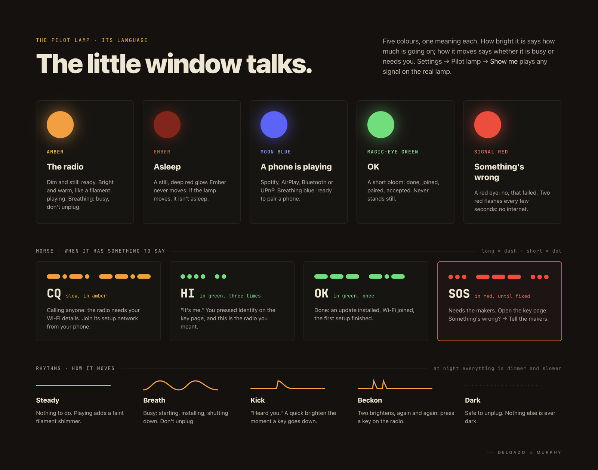

How it works
Old outside. Quietly new inside.
A small computer, a modern amplifier and a board of our own, wired to the cabinet’s original keys, knobs, lamp and speaker.
In one picture
From a key press to the speaker
The keys and knobs are wired to our board, the Hasler HAT, which sits on a Raspberry Pi and an amplifier.
On the Pi runs haslerd, our small program. It feels each key and knob, starts the right music, drives the pilot lamp, and serves the radio’s page to phones on your Wi-Fi.
The music itself is played by moOde audio, a well-loved open-source player. Spotify, AirPlay, Bluetooth and other music apps all arrive through the same amplifier, and the volume knob is the amplifier’s own volume, so nothing is louder than the knob allows. All of it comes out of the cabinet’s original speaker.
![Diagram. The cabinet's keys, knobs and pilot lamp connect to the Hasler HAT board, which connects to haslerd on the Raspberry Pi. haslerd also serves the key page on your phone, and can talk to Home Assistant if you use it. haslerd starts one source at a time: internet radio, YouTube Music, Spotify Connect, or a phone over AirPlay, Bluetooth or UPnP. The music goes through CamillaDSP (tone), then the Amp4 Pro amplifier (volume, with a ceiling), then the original speaker. Snapcast can send it to other Haslers too.](img/architecture.svg)
The pilot lamp
A small light with a lot to say.
Five colours, a few rhythms, one meaning each. If the lamp moves, it isn’t asleep. If it’s dark, it is safe to unplug.
- Playingwarm and bright, a faint filament shimmerMusic is on, like a light bulb in the window.
- Readyamber, dim and stillPress a key.
- Busyamber, breathing every 2.8 sStarting, loading, updating. Leave it plugged in.
- Heard youone quick brightenYour key press arrived, within a frame.
- A phone is playingmoon blue, steadySpotify, AirPlay or Bluetooth has the radio.
- Pairingblue, breathingBluetooth is open for a new phone.
- Asleepa deep ember glow that never movesStandby. A key or the tone knob wakes it.
- OKa green bloom, then backDone: a phone paired, the Wi-Fi joined.
- That didn’t worka slow red glow that fadesSay, a station is off the air. Try another key.
- Press a key on the radiotwo quick brightens, again and againTo confirm something you started on the page.
- No internettwo red flashes every few secondsCheck the router. Bluetooth still works.
- Joined a roomone slow swellThis radio joined or left another room’s music.
- Needs Wi-FiMorse CQ in amber: -·-· --·-It has opened its own setup network.
- It’s meMorse HI in green: ···· ··Identify, when you have more than one.
- Set up, or updatedMorse OK in green: --- -·-All went well.
- Needs the makersMorse SOS in red: ··· --- ···The page says what. Tell us.
- Darknothing at allOff. Safe to unplug. Nothing else is ever dark.
From sunset to sunrise the lamp is dimmer and slower. The knobs never change it: your ears are the feedback. Can’t tell the colours apart? The radio’s page says it in words, and Show me plays any signal on the real lamp. The lamp’s full design.


Rooms
Two Haslers, one song.
Two or more Haslers on the same Wi-Fi can play the same music, in step. One radio leads and the others follow; each keeps its own volume, tone and standby.
Start a group from the leader’s page with Also play on…, or give a key on the other radio the job of joining. Grouped, music starts about a second after a key press: the time it takes to keep every speaker together.
Phones see each radio by its room: Hasler Kitchen, Hasler Study.
While a radio follows
- Its numbered keys change the music for the whole group.
- Volume and tone stay with each radio.
- Standby on a follower sleeps just that radio; on the leader, it ends the group.
- A phone playing to the leader is heard everywhere.
Updates and help
It looks after itself. When it can’t, we’re a message away.
Updates are signed by us, so the radio can tell they are genuine. Small ones install at night, only while it rests. Bigger ones ask first. Afterwards the radio checks itself, and if anything is worse it goes back to the version it had, by itself. Your keys and settings are never touched.
Every new version goes to our own radio first, on the Bench channel, and only later to Stable, the channel every radio at home is on.
When something is wrong, the page checks the radio and says what it found, in plain words. Tell the makers gathers what we usually ask, with nothing private, and our answer comes back on the radio’s own page. If we need to look, the owner opens a private link for 24 hours with a press on the radio, and it closes by itself.